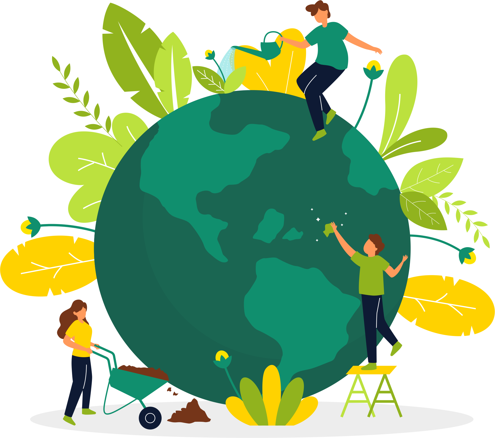

<div class="jumbotron jumbotron-fluid jumboCor mb-0">
    <div class="container">
        <h1 class="display-4 d-flex justify-content-center">Armazém Natural: Quem Somos?</h1>
        <h5 class="d-flex justify-content-center">Acreditamos em um mundo melhor. E queremos contribuir com ele!</h5>
        <div class="row">
        <div class="col-md-6">
            <p class="lead p-4">Só no Brasil, é desperdiçada uma média de 20 toneladas de
                comida por ano. A falta de logística na distribuição de alimentos provoca prejuízos econômicos e sociais
                para todos. A cada dia a sociedade vem cobrando por melhores soluções para essas questões e preferindo
                os produtos e serviços que se comprometem com essas iniciativas. Assim, decidimos facilitar o acesso de
                você, consumidor, à produção de vocês, pequenos e médios produtores, que assim como nós estão
                preocupados com o consumo e a produção responsáveis. Gostou? Então venha fazer parte dessa rede que só cresce!</p>
                <div class="wrapper"  routerLink="/cadastrar">
                    <button>Cadastrar</button>
                </div>
        </div>
        <div class="col-md-6">
            
        </div>
    </div>
    </div>